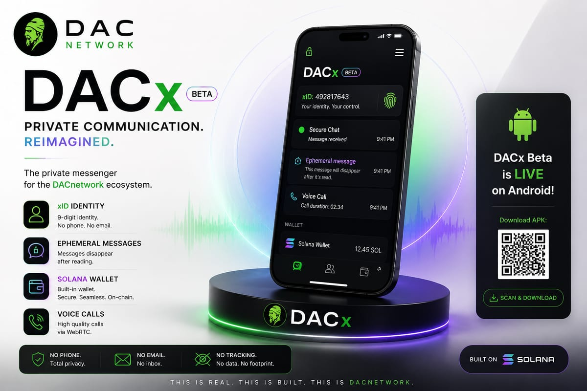

DACx
Beta Live (Android v1.5.10)
Signal live · network quiet · utility only
DACnetwork is a Web3 ecosystem on Solana. Real activity, private communication and infrastructure, coordinated by the $DAC utility token. Not an investment.
CURRENT STATUS
Beta Live (Android v1.5.10)
In development (Devnet)
Planned
Research and development
We are focused on building real utility. No public token sale at this stage.
UPDATES
Build in public — what we are building now, in short.
Android is live, with OTA: reactions, PIN vault and 12-word restore.
Max 5 $DAC per user per day, 50,000 per network per day. xID links from DACx.
The DACx wallet is on Devnet, not $DAC mainnet. Phrase restore is live.
Docs are on GitHub and the site is live. There is no active public sale.
// NODE 02 — DOCTRINE
Human activity is an authentic form of capital. Not financial capital. Not computational power. Real, verifiable, human activity.
Technology validates value. Humans create it.
No central entity controls the ecosystem. Value belongs to those who create it.
Roles and rewards come from real contribution, not position or starting capital.
Technology assists. Humans decide. No irreversible decision without human confirmation.
DACnetwork builds knowledge, not speculation. Web3 as a social tool, not a financial one.
Local processing. Minimized data collection. Data sovereignty belongs to the user.
The movement is collective, not personal. No absolute leader. Distributed responsibility.
The ecosystem evolves through continuous contribution, not static promises.

Live · Android 1.5.10The ecosystem private messenger. xID, ephemeral messages (3 min), Solana Devnet wallet — no phone, no email.
Wallet = Solana Devnet (not $DAC mainnet). Messages are not E2EE yet — held on servers until read, then deleted after 3 minutes. Voice calls are not offered in the current UI. OTA on v1.5.10 — close and reopen the app.
rutaX is the Proof of Activity mobile app. In development on Devnet — rewards are not mainnet $DAC yet. Identity comes from DACx (Link rutaX), the xID is not typed in.
Digital society. Not an escape metaverse.
Edge infrastructure. Privacy by architecture.
// NODE 04 — PHYSICAL LAYER
DAC Smart Systems extends DACnetwork into the physical world. Distributed edge infrastructure that validates real-world activity without a central cloud.
Local processing on each node. No unnecessary data transmission. User data stays with the user.
Technology assists. Humans decide. Zero irreversible decisions without human confirmation.
Distributed, interoperable, locally autonomous systems. No single point of failure.
// NODE 05 — SOCIAL LAYER
DACmeta is not an escape metaverse. It is an organized digital society — the coherent extension of real society into virtual space.
Digital space must extend society, not distort it.
Custom avatars, meetings, conferences, communities, and DACmeta Lounge as the main social space.
Verifiable on-chain ownership, direct monetization, an integrated 3D marketplace, transactions in $DAC.
3D assets from photogrammetry, real-world scans, reusable objects. Physical reality becomes a digital extension. Assets work across the ecosystem and with DAC Smart Systems.
// NODE 06 — TOKENOMICS
| Category | Allocation | Amount |
|---|---|---|
| Community Rewards | 30% | 900,000,000 |
| Ecosystem Development | 25% | 750,000,000 |
| Treasury | 15% | 450,000,000 |
| Team and advisors | 15% | 450,000,000 |
| Public presale (allocation only) | 10% | 300,000,000 |
| Initial liquidity | 5% | 150,000,000 |
| Total | 100% | 3,000,000,000 |
The presale line is allocation only. There is no active public sale. Price, cap, TGE date, DEX and vesting are not yet defined (TBD).
$DAC is a utility token. It is not an investment and it does not promise profit. Aligned with MiCA (EU 2023/1114).
// NODE 07 — DEVELOPMENT PHASES
Each phase is validated before the next. Operational milestones condition token unlocks. Public quarterly reports.
// NODE 08 — CONNECT
DACnetwork is built by the community, for the community. There are no absolute leaders — there are contributors. There are no spectators — there are active participants.
Official profile, updates and partnerships.
@DACLabsGlobal community, support, discussions.
t.me/DACNetworkOfficial announcements, updates, burn reports.
LinkedInCode, docs, progress, issues — build in public.
DAC-web3Ecosystem documentation and collaboration on GitHub.
dac-networkPartnerships, press and official requests to Asociația DACnetwork Web3.
admin@dacnetwork.ioAsociația DACnetwork Web3 — registration in progress (OG 26/2000). Not yet in the register. $DAC is a utility token, not an investment.